Data Management in MATLAB
copyright: Anthony Azevedo, 2014
Contents
Introduction
This script will explore electrophyiological recordings of cells in the auditory pathway of "the fly", Drosophila melanogaster. Such recordings will involve a stimulus - mechanical or electrical - and an electrical response of the cell. The responses are measured using a glass pipette filled with a saline solution that is connected by a silver chloride wire to a sensitive patch clamp amplifier. Mechanical stimuli are delivered using a piezoelectric actuator that will push on the fly's antenna.
First, we will inspect the data managment scheme, how the raw_data is stored and organized when it is recorded.
Then we will inspect some of these data individually.
Finally, we will pose an anlysis question and follow a routine to answer the question according to the following steps: (1) find data that are relevant to the question (2) import the data (3) perform operations on the data (4) display the results.
Naming conventions and data management
Raw data is stored in this repository on my machine at /Users/tony/Code/Modern-Data-Management/raw_data. The fullfile function creates a string for the path to a directory.
clear % clears the "workspace" raw_data_directory = fullfile('~','Code','Modern-Data-Management','raw_data'); cd(raw_data_directory) pwd
ans = /Users/tony/Code/Modern-Data-Management/raw_data
A typical experiment procedes as follows: (1) "mount" a fly in a holder, i.e. put the fly into a piece of aluminum foil that will hold it in position on the microscope, and glue it in place. (2) Dissect the fly's cuticle (head) to expose the brain, place the holder on the microscope. (3) Visualize the cell and patch the neuron of interest. (4) Deliver stimuli of various sorts. (5) If the preparation (prep) is still ok after the first cell, go on to another cell in the same prep.
Accordingly, I have decided to store raw data in the following way: (A) Within the top level raw_data directory (B) Within a direcotory that refers to the day (YYMMDD) on which I performed the recordings (B) In a directory for Each cell that I record with the naming convention YYMMDD_FX_CY. This choice was influenced by conventions already in place in the lab. I could have chosen to store each cell in the raw_data folder, but I didn't.
% Look at the contents of the cell directory 131126_F2_C1 experimentdate = '131126'; flynumber = '2'; cellnumber = '1'; cellIdentifier = [experimentdate '_F' flynumber '_C' cellnumber] celldirectory = fullfile(raw_data_directory,experimentdate,cellIdentifier) % Move to that folder; cd(celldirectory) % list the contents ls % You will see a list of ".mat" files. These are files of data that % matlab creates using the "save" function. You can read these files using % the "load" function.
cellIdentifier = 131126_F2_C1 celldirectory = ~/Code/Modern-Data-Management/raw_data/131126/131126_F2_C1 Acquisition_131126_F2_C1.mat BasicEPhysRig_131126_F2_C1.mat CurrentSine_Raw_131126_F2_C1_1.mat CurrentSine_Raw_131126_F2_C1_10.mat CurrentSine_Raw_131126_F2_C1_11.mat CurrentSine_Raw_131126_F2_C1_12.mat CurrentSine_Raw_131126_F2_C1_13.mat CurrentSine_Raw_131126_F2_C1_14.mat CurrentSine_Raw_131126_F2_C1_15.mat CurrentSine_Raw_131126_F2_C1_16.mat CurrentSine_Raw_131126_F2_C1_17.mat CurrentSine_Raw_131126_F2_C1_18.mat CurrentSine_Raw_131126_F2_C1_19.mat CurrentSine_Raw_131126_F2_C1_2.mat CurrentSine_Raw_131126_F2_C1_20.mat CurrentSine_Raw_131126_F2_C1_21.mat CurrentSine_Raw_131126_F2_C1_22.mat CurrentSine_Raw_131126_F2_C1_23.mat CurrentSine_Raw_131126_F2_C1_24.mat CurrentSine_Raw_131126_F2_C1_25.mat CurrentSine_Raw_131126_F2_C1_3.mat CurrentSine_Raw_131126_F2_C1_4.mat CurrentSine_Raw_131126_F2_C1_5.mat CurrentSine_Raw_131126_F2_C1_6.mat CurrentSine_Raw_131126_F2_C1_7.mat CurrentSine_Raw_131126_F2_C1_8.mat CurrentSine_Raw_131126_F2_C1_9.mat CurrentStep_Raw_131126_F2_C1_1.mat CurrentStep_Raw_131126_F2_C1_2.mat CurrentStep_Raw_131126_F2_C1_3.mat CurrentStep_Raw_131126_F2_C1_4.mat CurrentStep_Raw_131126_F2_C1_5.mat PiezoCourtshipSong_Raw_131126_F2_C1_1.mat PiezoCourtshipSong_Raw_131126_F2_C1_2.mat PiezoCourtshipSong_Raw_131126_F2_C1_3.mat PiezoCourtshipSong_Raw_131126_F2_C1_4.mat PiezoCourtshipSong_Raw_131126_F2_C1_5.mat PiezoCourtshipSong_Raw_131126_F2_C1_6.mat PiezoRig_131126_F2_C1.mat PiezoSine_Raw_131126_F2_C1_1.mat PiezoSine_Raw_131126_F2_C1_10.mat PiezoSine_Raw_131126_F2_C1_11.mat PiezoSine_Raw_131126_F2_C1_12.mat PiezoSine_Raw_131126_F2_C1_13.mat PiezoSine_Raw_131126_F2_C1_14.mat PiezoSine_Raw_131126_F2_C1_15.mat PiezoSine_Raw_131126_F2_C1_16.mat PiezoSine_Raw_131126_F2_C1_17.mat PiezoSine_Raw_131126_F2_C1_18.mat PiezoSine_Raw_131126_F2_C1_19.mat PiezoSine_Raw_131126_F2_C1_2.mat PiezoSine_Raw_131126_F2_C1_20.mat PiezoSine_Raw_131126_F2_C1_21.mat PiezoSine_Raw_131126_F2_C1_22.mat PiezoSine_Raw_131126_F2_C1_23.mat PiezoSine_Raw_131126_F2_C1_24.mat PiezoSine_Raw_131126_F2_C1_25.mat PiezoSine_Raw_131126_F2_C1_26.mat PiezoSine_Raw_131126_F2_C1_27.mat PiezoSine_Raw_131126_F2_C1_28.mat PiezoSine_Raw_131126_F2_C1_29.mat PiezoSine_Raw_131126_F2_C1_3.mat PiezoSine_Raw_131126_F2_C1_30.mat PiezoSine_Raw_131126_F2_C1_31.mat PiezoSine_Raw_131126_F2_C1_32.mat PiezoSine_Raw_131126_F2_C1_33.mat PiezoSine_Raw_131126_F2_C1_34.mat PiezoSine_Raw_131126_F2_C1_35.mat PiezoSine_Raw_131126_F2_C1_36.mat PiezoSine_Raw_131126_F2_C1_37.mat PiezoSine_Raw_131126_F2_C1_38.mat PiezoSine_Raw_131126_F2_C1_39.mat PiezoSine_Raw_131126_F2_C1_4.mat PiezoSine_Raw_131126_F2_C1_40.mat PiezoSine_Raw_131126_F2_C1_41.mat PiezoSine_Raw_131126_F2_C1_42.mat PiezoSine_Raw_131126_F2_C1_43.mat PiezoSine_Raw_131126_F2_C1_44.mat PiezoSine_Raw_131126_F2_C1_45.mat PiezoSine_Raw_131126_F2_C1_5.mat PiezoSine_Raw_131126_F2_C1_6.mat PiezoSine_Raw_131126_F2_C1_7.mat PiezoSine_Raw_131126_F2_C1_8.mat PiezoSine_Raw_131126_F2_C1_9.mat PiezoSquareWave_Raw_131126_F2_C1_1.mat PiezoSquareWave_Raw_131126_F2_C1_2.mat PiezoSquareWave_Raw_131126_F2_C1_3.mat PiezoSquareWave_Raw_131126_F2_C1_4.mat PiezoSquareWave_Raw_131126_F2_C1_5.mat PiezoStep_Raw_131126_F2_C1_1.mat PiezoStep_Raw_131126_F2_C1_10.mat PiezoStep_Raw_131126_F2_C1_11.mat PiezoStep_Raw_131126_F2_C1_12.mat PiezoStep_Raw_131126_F2_C1_13.mat PiezoStep_Raw_131126_F2_C1_14.mat PiezoStep_Raw_131126_F2_C1_15.mat PiezoStep_Raw_131126_F2_C1_16.mat PiezoStep_Raw_131126_F2_C1_17.mat PiezoStep_Raw_131126_F2_C1_18.mat PiezoStep_Raw_131126_F2_C1_19.mat PiezoStep_Raw_131126_F2_C1_2.mat PiezoStep_Raw_131126_F2_C1_20.mat PiezoStep_Raw_131126_F2_C1_21.mat PiezoStep_Raw_131126_F2_C1_22.mat PiezoStep_Raw_131126_F2_C1_23.mat PiezoStep_Raw_131126_F2_C1_24.mat PiezoStep_Raw_131126_F2_C1_25.mat PiezoStep_Raw_131126_F2_C1_26.mat PiezoStep_Raw_131126_F2_C1_27.mat PiezoStep_Raw_131126_F2_C1_28.mat PiezoStep_Raw_131126_F2_C1_29.mat PiezoStep_Raw_131126_F2_C1_3.mat PiezoStep_Raw_131126_F2_C1_30.mat PiezoStep_Raw_131126_F2_C1_31.mat PiezoStep_Raw_131126_F2_C1_32.mat PiezoStep_Raw_131126_F2_C1_33.mat PiezoStep_Raw_131126_F2_C1_34.mat PiezoStep_Raw_131126_F2_C1_35.mat PiezoStep_Raw_131126_F2_C1_36.mat PiezoStep_Raw_131126_F2_C1_37.mat PiezoStep_Raw_131126_F2_C1_38.mat PiezoStep_Raw_131126_F2_C1_39.mat PiezoStep_Raw_131126_F2_C1_4.mat PiezoStep_Raw_131126_F2_C1_40.mat PiezoStep_Raw_131126_F2_C1_41.mat PiezoStep_Raw_131126_F2_C1_42.mat PiezoStep_Raw_131126_F2_C1_43.mat PiezoStep_Raw_131126_F2_C1_44.mat PiezoStep_Raw_131126_F2_C1_45.mat PiezoStep_Raw_131126_F2_C1_46.mat PiezoStep_Raw_131126_F2_C1_47.mat PiezoStep_Raw_131126_F2_C1_48.mat PiezoStep_Raw_131126_F2_C1_49.mat PiezoStep_Raw_131126_F2_C1_5.mat PiezoStep_Raw_131126_F2_C1_50.mat PiezoStep_Raw_131126_F2_C1_51.mat PiezoStep_Raw_131126_F2_C1_52.mat PiezoStep_Raw_131126_F2_C1_53.mat PiezoStep_Raw_131126_F2_C1_54.mat PiezoStep_Raw_131126_F2_C1_55.mat PiezoStep_Raw_131126_F2_C1_56.mat PiezoStep_Raw_131126_F2_C1_57.mat PiezoStep_Raw_131126_F2_C1_58.mat PiezoStep_Raw_131126_F2_C1_59.mat PiezoStep_Raw_131126_F2_C1_6.mat PiezoStep_Raw_131126_F2_C1_60.mat PiezoStep_Raw_131126_F2_C1_61.mat PiezoStep_Raw_131126_F2_C1_62.mat PiezoStep_Raw_131126_F2_C1_63.mat PiezoStep_Raw_131126_F2_C1_64.mat PiezoStep_Raw_131126_F2_C1_65.mat PiezoStep_Raw_131126_F2_C1_66.mat PiezoStep_Raw_131126_F2_C1_67.mat PiezoStep_Raw_131126_F2_C1_68.mat PiezoStep_Raw_131126_F2_C1_69.mat PiezoStep_Raw_131126_F2_C1_7.mat PiezoStep_Raw_131126_F2_C1_70.mat PiezoStep_Raw_131126_F2_C1_71.mat PiezoStep_Raw_131126_F2_C1_72.mat PiezoStep_Raw_131126_F2_C1_73.mat PiezoStep_Raw_131126_F2_C1_74.mat PiezoStep_Raw_131126_F2_C1_75.mat PiezoStep_Raw_131126_F2_C1_76.mat PiezoStep_Raw_131126_F2_C1_77.mat PiezoStep_Raw_131126_F2_C1_78.mat PiezoStep_Raw_131126_F2_C1_79.mat PiezoStep_Raw_131126_F2_C1_8.mat PiezoStep_Raw_131126_F2_C1_80.mat PiezoStep_Raw_131126_F2_C1_81.mat PiezoStep_Raw_131126_F2_C1_82.mat PiezoStep_Raw_131126_F2_C1_83.mat PiezoStep_Raw_131126_F2_C1_84.mat PiezoStep_Raw_131126_F2_C1_85.mat PiezoStep_Raw_131126_F2_C1_86.mat PiezoStep_Raw_131126_F2_C1_87.mat PiezoStep_Raw_131126_F2_C1_9.mat SealAndLeak_Raw_131126_F2_C1_1.mat Sweep_Raw_131126_F2_C1_1.mat Sweep_Raw_131126_F2_C1_2.mat Sweep_Raw_131126_F2_C1_3.mat Sweep_Raw_131126_F2_C1_4.mat Sweep_Raw_131126_F2_C1_5.mat Sweep_Raw_131126_F2_C1_6.mat Sweep_Raw_131126_F2_C1_7.mat Sweep_Raw_131126_F2_C1_8.mat fourier_demo2.m notes_131126_F2_C1.txt
Inspect data from a single trial
load('PiezoSine_Raw_131126_F2_C1_3.mat')
The naming conventions of the .mat files gives information about how these data were collected.
The first part is the name of the stimulus protocol that was used to produce a stimulus, in this case "PiezoSine", or a sine wave mechanical stimulus delivered through the piezo electric actuator. I define a protocol as a collection of parameters used to construct the stimulus in the first place (at acquisition), and to reconstruct it post-hoc (during analysis).
The "Raw" signifier indicates this is a single trial. Trials are the units of acquired data and represent a single presentation of a particular stimulus.
Next comes the cell identifier
Finally, the last number is the protocol trial number (3 of 45 in this case)
When we loaded the trial, several new variables were created in the workspace
whos % displays the variables in the workspace
Name Size Bytes Class Attributes ans 1x48 96 char cellIdentifier 1x12 24 char celldirectory 1x58 116 char cellnumber 1x1 2 char current 85001x1 680008 double experimentdate 1x6 12 char flynumber 1x1 2 char name 1x89 178 char params 1x1 3558 struct raw_data_directory 1x38 76 char sgsmonitor 85001x1 680008 double tags 0x0 0 cell voltage 85001x1 680008 double
These are:
The path to the raw file on PC work station. Original path is to a folder called Acquisition, where newly acquired data is stored.
name
name = C:\Users\Anthony Azevedo\Acquisition\131126\131126_F2_C1\PiezoSine_Raw_131126_F2_C1_3.mat
A built-in data structure called a "Matlab structure" (help struct) which has "fields" ("gain","mode", etc) and "values". You'll see how to use this below.
params
params =
displacement: 0.4000
displacementOffset: 5
displacements: [0.1000 0.2000 0.4000]
durSweep: 1.7000
freq: 25
freqs: [25 50 100 200 400]
gain: 5
mode: 'IClamp'
postDurInSec: 1
preDurInSec: 0.4000
protocol: 'PiezoSine'
ramptime: 0.0400
sampratein: 50000
samprateout: 50000
secondary_gain: 5
stimDurInSec: 0.3000
Vm_id: 0
trial: 3
trialBlock: 9
A built-in "cell array" (help cell) called tags that will hold any information about this particular trial that I may have entered while acquiring (e.g. application of drugs, washout of drugs, etc)
tags
tags =
{}
The measurement of current over time (A large 1D array)
% I could call length(current) too.
size(current)
ans =
85001 1
The measurement of voltage over time (A large 1D array)
size(voltage)
ans =
85001 1
And the measurement of a strain gauge on the piezo actuator over time (A large 1D array). This let's me know what the probe pushing the antenna is actually doing, which can be different than the stimulus I wanted.
size(sgsmonitor)
ans =
85001 1
The original stimulus
The params structure will tell us how the stimulus and response were generated and collected. I created the acquisition system to use these numbers, and these are my choices of what to call these numbers. They are not universal vocabulary, just my preferences and design, but they represent standard quantities that such an acquisition system would need.
params
params =
displacement: 0.4000
displacementOffset: 5
displacements: [0.1000 0.2000 0.4000]
durSweep: 1.7000
freq: 25
freqs: [25 50 100 200 400]
gain: 5
mode: 'IClamp'
postDurInSec: 1
preDurInSec: 0.4000
protocol: 'PiezoSine'
ramptime: 0.0400
sampratein: 50000
samprateout: 50000
secondary_gain: 5
stimDurInSec: 0.3000
Vm_id: 0
trial: 3
trialBlock: 9
The following parameters define how the stimulus evolves over time.
the sampling rate of the stimulus command. A digitial to analog converter will produce a continuous analog signal based on a digital command from the computer
params.samprateout
ans =
50000
seconds before the stimulus actually starts
params.preDurInSec
ans =
0.4000
seconds that the stimulus will be presented
params.stimDurInSec
ans =
0.3000
seconds after the stimulus before the trial ends
params.postDurInSec
ans =
1
This is just the sum of the previous three.
params.durSweep
ans =
1.7000
With these numbers, we can create a vector representing time. This is the time base for the stimulus.
number_of_samples = params.durSweep*params.samprateout; time_stim = (0:number_of_samples); % a vector with 85001 entries. Note, I started at 0. This may be dumb, % but it was intuitive to me, and I just have to be consistent. time_stim = time_stim/params.samprateout; % a time vector beginning at 0, ending at 1.7 sec. time_stim(1) time_stim(end) % Careful: end has two meanings, as you'll see below. diff(time_stim(1:2)) % "diff" finds the difference between entries in a vector % each entry is 2e-5 seconds apart, which would give you 50k samples per % second
ans =
0
ans =
1.7000
ans =
2.0000e-05
Subtract off the pre period so the stimulus starts at time = 0
time_stim = time_stim - params.preDurInSec;
Use logical operations to learn about the vector
sum(time_stim < 0) % 2000 samples before the stimulus starts sum(time_stim >= 0 & time_stim < params.stimDurInSec) % 15001 stimulus samples sum(time_stim > params.stimDurInSec) % 50000 points after the stimulus is over
ans =
20000
ans =
15001
ans =
50000
Next I'll create the stimulus from the params structure. The PiezoSine Protocol defines a sine wave stimulus using the following parameters
params.protocol params.freq % the frequency of the sine wave params.displacement % the amplitude. This is a mechanical stimulus, so the displacement tells % us how far the piezo moves. params.displacementOffset % This will offset our stimulus a certain amount params.ramptime % I don't want the sine wave to start right away, so I have a little % ramping time to get to full amplitude.
ans =
PiezoSine
ans =
25
ans =
0.4000
ans =
5
ans =
0.0400
You can safely skim the next section. This is code from the acquisition routines and is somewhat separate. The stimulus vector is first a vector of zeros the same size as time
stim = time_stim; stim(1,:) = 0;
Then I Find the elements in the stim array that will contain the stimulus i.e. entries 20001, through 35000 (20001:35000)
stimpnts = round(params.samprateout*params.preDurInSec+1:...
params.samprateout*(params.preDurInSec+params.stimDurInSec));
This creates a "window" that ramps at the begining and the end of the stimlus, and put the window into an array where the stimulus will be. This uses fairly advanced syntax, you can figure out what it does as an exercise. Just take a look to see what we're working with.
stimwindow = stim; w = window(@triang,2*params.ramptime*params.samprateout); w = [w(1:params.ramptime*params.samprateout);... ones(length(stimpnts)-length(w),1);... w(params.ramptime*params.samprateout+1:end)]; stimwindow(stimpnts) = w; figure % makes a new figure window plot(time_stim,stimwindow) % see the ramping on and off?.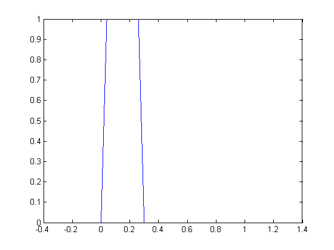
Now create a sine wave ... and do element wise multiplication of the window and the sine wave. This puts zeros in the pre and post periods and a stimulus where it belongs. Add on the offset.
sinewave = params.displacement * sin(2*pi * params.freq * time_stim); stim = sinewave .* stimwindow; stim = stim + params.displacementOffset; figure plot(time_stim,stimwindow) % see the ramping on and off?. hold on % keep all the lines on the plot plot(time_stim,stim,'r') % plot in red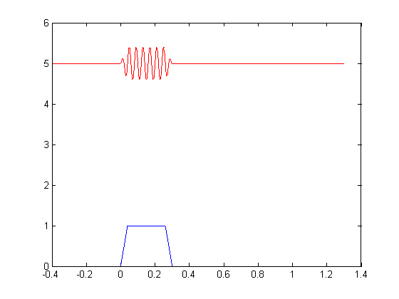
Look at the Response
Several other parameters in the params structure are specific to respons acquisition, some are for documentation only (gain, secondary_gain, Vm_id).
The mode indicates whether we were looking at voltage or current of the cell
params.mode
ans = IClamp
In IClamp mode, I control the current injected into the cell through my patch pipette, while I record voltage.
First we need a response time vector. This could have a different sampling rate than the stimulus, though not in this case. This is called sampratein, because the data is coming into the computer in this step.
number_of_samples = params.durSweep*params.sampratein; time_resp = (0:number_of_samples); time_resp = time_resp/params.sampratein; time_resp = time_resp - params.preDurInSec;
First, the sgsmonitor (the strain gauge sensor monitor) reports the actual position of the probe, which is delayed relative to the stimulus itself, so it's important to see the difference.
figure plot(time_stim,stim,'r') % plot in red hold on % keep all the lines on the plot plot(time_resp,sgsmonitor,'k') xlim([-.01 .2]);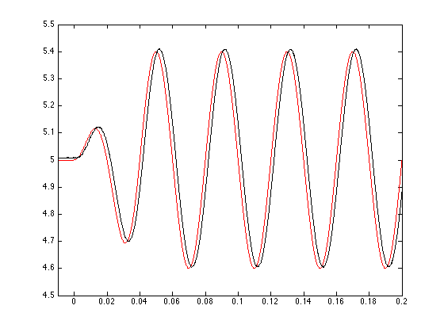
Now plot the response in a new figure
figure plot(time_resp,voltage);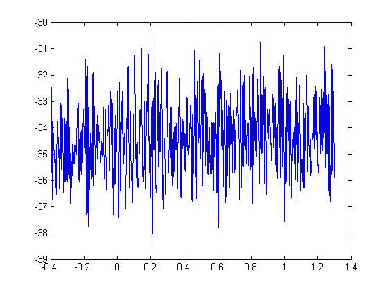
This is the voltage response of the cell when I move the antenna with the stimulus we created above. Admitedly, this looks like a bunch of hash and is somewhat unimpressive. Just hold tight.
Alternative display ideas:
figure subplot(2,1,1) % help subplot plot(time_resp,sgsmonitor) subplot(2,1,2) plot(time_resp,voltage) % The stimulus and sgsmonitor are in V, the command and signal from the % actuator. The actual diplacement of the probe comes from converting to % microns displacement_in_microns_per_volt = 3; subplot(2,1,1) title([params.protocol ' stimulus: ',... num2str(params.freq) ' Hz, ',... num2str(params.displacement * displacement_in_microns_per_volt) ' \mum']) ylabel('Stimulus command (V)'); xlabel('Time (sec)'); subplot(2,1,2) title('Response') ylabel('Voltage (mV)'); xlabel('Time (sec)');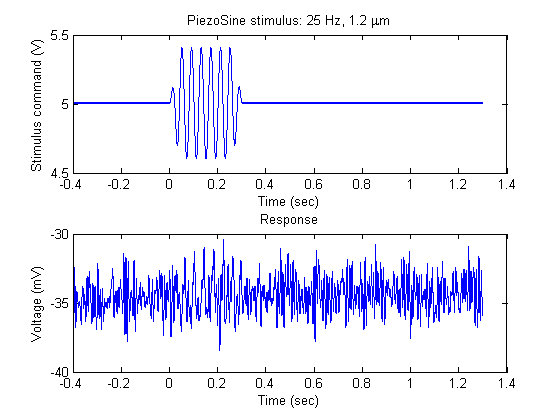
Analysis example
Finally we would like to use these data to answer a question. The general question I would like to ask is whether different cells are selective for different frequencies of antennal movement. (To reframe this for an NIH fellowship: I will test the hypothesis that different cells have different frequency/response relationships) Thus, as a specific question, I would like to know how a given cell responds to a range of frequencies.
Obviously, experimental design is a critical part of being able to answer this specific question. We will assume that I designed the experiment appropriately and gathered sufficient data to do this.
What I have done is deliver mechanical stimuli with a range of different frequencies, and with a range of amplitudes (displacements) at each frequency. For each frequency, displacement pair, I have recorded three trials to be able to get an average response.
So the first goal in the analysis is to find the three trials with the same frequency and displacement. We can see the set of frequencies and displacemts because I keep that information in the params matlab structure.
params.freqs
ans =
25 50 100 200 400
params.displacements
ans =
0.1000 0.2000 0.4000
Then I need to import the data from the raw data files into a data structure in matlab that will let me operate on those data easily.
Aside about data structures
"By data structure", I don't necessarily mean I will use matlab structure like the params structure we have above, though I could. Data structure is just the general term for how data are grouped together. Other data structures we have encountered so far-- besides "matlab" structures, an confusing name-- include vectors, aka arrays (current, voltage, time) and cell arrays (an empty one called tags). Take a look at the variables in the workspace. Under the class column, you can see the data structure type.
whos
Name Size Bytes Class Attributes ans 1x3 24 double cellIdentifier 1x12 24 char celldirectory 1x58 116 char cellnumber 1x1 2 char current 85001x1 680008 double displacement_in_microns_per_volt 1x1 8 double experimentdate 1x6 12 char flynumber 1x1 2 char name 1x89 178 char number_of_samples 1x1 8 double params 1x1 3558 struct raw_data_directory 1x38 76 char sgsmonitor 85001x1 680008 double sinewave 1x85001 680008 double stim 1x85001 680008 double stimpnts 1x15000 120000 double stimwindow 1x85001 680008 double tags 0x0 0 cell time_resp 1x85001 680008 double time_stim 1x85001 680008 double voltage 85001x1 680008 double w 15000x1 120000 double
The extension of the 1D array into multple dimensions is called a matrix. A matrix is a very convenient data structure to hold multiple rows and columns of NUMERICAL data because you can then do simple mathematical operations on the matrix, along any dimension you choose.
This is how I will store the voltage responses from each trial: a 2D matrix with 3 rows, one for each trial with a given frequency and displacement, and with 85001 columns, one for each time sample. Then I will be able to take the average of all the trials easily, along the first dimension, as it happens.
As an extension, if I were analyzing movies, my matrix might consist of image frames as 2D x-y data, with a third dimension as frame number over time. Or, if it's a color movie, I might have a 4D matrix: x,y,color,time. etc.
MATLAB (MATrix LABoratory) was designed for this.
As for the cell array: whereas the matrix can only hold numeric data, the cell array is a generic structure that can hold anything you want: numbers, strings, other cell arrays, anything. It can also be as many dimensions as you like. So it's a flexible data structure. It's just not good for holding numeric data because you wouldn't be able to perform mathematical operations on it, it's not built for that.
For the data structure called a "MATLAB" structure, we have seen an example of its advantage while we were using params : We can get values out by just calling the field name. This lets you group a bunch of things under one variable, and it doens't matter whether they are strings or numeric types or even cell arrays or other structures.
So, choosing a matrix to hold my trial data is an example of the decisions I have to make when managing data.
Anyways...
Finding relevant trials
For illustration purposes, we will clear the workspace of all its data and also make sure we are still in the right data folder
clear whos % this doesn't produce any output, there are no variables pwd % should be: '/Users/tony/raw_data/131126/131126_F2_C1'. If not, navigate there
ans = /Users/tony/Code/Modern-Data-Management/raw_data/131126/131126_F2_C1
From my experimental design, I know that in PiezoSine trials with numbers 1, 16, and 31, I delivered a stimulus with a displacement of .1 V and a frequency of 25 Hz. This is because I looped over all the displacements at each frequency, then changed the frequency, before repeating the whole set.
trials_25Hz_0_1 = [1 16 31]; % matlab doesn't take variable names with periods
This is the simplest way of finding data: knowing where it is. But I hate this method, chiefly because this often involves looking back and forth from a note book or file to my computer to enter numbers that start to confuse me. I usually try to be a little more programatic about it. If you notice in the params structure, a variable called trial block indicates that a trial belongs in a particular set. I might also search through the files in this directory, using code like below, and find trials that have identical parameters (except for trial number). But you can do this however you like.
Loading Data
For each trial number in my set, I will create the file name for that trial and load it into a new variable, called trial. For example
trial_file_name = ... ['PiezoSine_Raw_131126_F2_C1_',... num2str(trials_25Hz_0_1(3)),... '.mat'] trial = load(trial_file_name)
trial_file_name =
PiezoSine_Raw_131126_F2_C1_31.mat
trial =
voltage: [85001x1 double]
current: [85001x1 double]
sgsmonitor: [85001x1 double]
params: [1x1 struct]
name: [1x90 char]
tags: {}
This is different than when I called "load" before. Now instead of having several variables (name, params, voltage...), this imports the trial into a new matlab structure with field names for each variable. Same data, different structure!
I know how many trials I need to import (3). I also know how long the voltage traces will be because all the trials were run the same way and we have already played with one. To cut down on operations and time, I will create a matrix before I start that will be the same size as the one I ultimately need. This is best practices, the technical term is to "allocate" memory, or "preallocate" an array
voltage_matrix = zeros(length(trials_25Hz_0_1),length(trial.voltage)); size(voltage_matrix)
ans =
3 85001
Now I'll loop over the different trials we need. I'll use a counter, trial_index, that will increase by one on each loop, from 1 to 3
for trial_index = 1:length(trials_25Hz_0_1) disp(trial_index) % make the trial filename trial_file_name = ... ['PiezoSine_Raw_131126_F2_C1_',... num2str(trials_25Hz_0_1(trial_index)),... % trial_index changes on each loop '.mat'] % load the trial trial = load(trial_file_name); % just make sure the trial is what I want disp(trial.params.freq) disp(trial.params.displacement) % put the voltage trace into the voltage matrix voltage_matrix(trial_index,:) = trial.voltage; end
1
trial_file_name =
PiezoSine_Raw_131126_F2_C1_1.mat
25
0.1000
2
trial_file_name =
PiezoSine_Raw_131126_F2_C1_16.mat
25
0.1000
3
trial_file_name =
PiezoSine_Raw_131126_F2_C1_31.mat
25
0.1000
I re-create the time vector, using the trial structure:
time = (0:1:trial.params.durSweep*trial.params.sampratein)/trial.params.sampratein; time = time-trial.params.preDurInSec;
And I take a look at what I have loaded. When calling "plot", matlab assumes the same time base for each y row. Again, not entirely satisfying.
figure plot(time,voltage_matrix);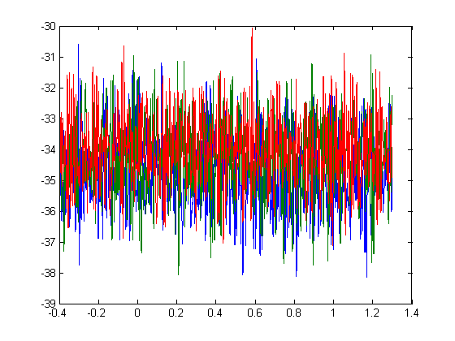
Operating on the data
The real operation I want to run is the average along the 1st dimension
mean_voltage_trace = mean(voltage_matrix,1);
Plot what happened (using a syntax that lets me control the color of the lines)
figure % plot the individual traces in pink plot(time,voltage_matrix,'color',[1, .7 .7]); hold on % plot the average trace in red plot(time,mean_voltage_trace,'color',[.7, 0 0]);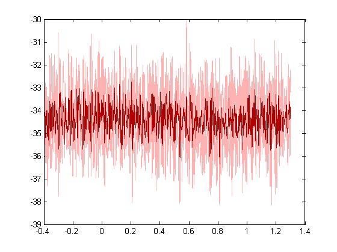
What I would like to know is, for this stimulus, what is the amplitude of the response? I choose to calculate the amplitude as the maximum of the response during the stimulus period (between 0 and the stimulus duration), minus the average voltage during the base line (time < 0). Note, mean_voltage_trace is a 1D vector, so I'm not specifying the dimension here
baseline_average = mean(mean_voltage_trace(time < 0)); baseline_average max_response = max(mean_voltage_trace(time > 0 & time < trial.params.stimDurInSec)); max_response amplitude_25Hz_0_1 = max_response - baseline_average; amplitude_25Hz_0_1
baseline_average =
-34.3187
max_response =
-32.7404
amplitude_25Hz_0_1 =
1.5783
As an exercise, consider that I could instead take the average of the maximum amplitudes of each trial, but that would give me a different answer
Broadening the analysis
Thus far, I have looked at the lowest frequency and smallest displacement. I will repeat the same procedure with each set of frequencies and displacements.
To do this more programatically, I will loop over a collection of trial number vectors like trials_25Hz_0_1. Just as for trials_25Hz_0_1, the trials are spaced 15 trials apart for all of the other frequencies and displacements.
I can also use the following example syntax:
trials_25Hz_0_1 = (1:15:45)
trials_25Hz_0_1 =
1 16 31
or, I could find find those values programatically, too. This would be useful if I for some reason used more or fewer frequencies or displacements
number_of_stimuli = ... % the number of stimuli I will repeate 3 times length(trial.params.freqs) * ... length(trial.params.displacements) repetitions = 3
number_of_stimuli =
15
repetitions =
3
I'm looking for the amplitude of the average response to each of these stimuli, so I want to preallocate a matrix to hold those calculated values, and for good measure, redefine voltage_matrix.
amplitudes = zeros(... length(trial.params.freqs),... length(trial.params.displacements)) voltage_matrix = zeros(repetitions,length(trial.voltage));
amplitudes =
0 0 0
0 0 0
0 0 0
0 0 0
0 0 0
Now I will create a loop that will use first_trial_number as a counter. As this increases, it changes trialnumbers to give the trial numbers for the same stimulus trials. I will do the same calculation as above, while moving along the rows, then columns of the amplitudes matrix to fill it in with each result.
first_trial_number = 0; for ii = 1:length(trial.params.freqs) for jj = 1:length(trial.params.displacements) first_trial_number = first_trial_number +1; trialnumbers = ... (first_trial_number:... number_of_stimuli:... number_of_stimuli*repetitions); for trial_index = 1:length(trialnumbers) disp(trial_index) % make the trial filename trial_file_name = ... ['PiezoSine_Raw_131126_F2_C1_',... num2str(trialnumbers(trial_index)),... % trial_index changes on each loop '.mat']; % load the trial trial = load(trial_file_name); % just make sure the trial is what I want disp(trial.params.freq) disp(trial.params.displacement) % put the voltage trace into the voltage matrix voltage_matrix(trial_index,:) = trial.voltage; end mean_voltage_trace = mean(voltage_matrix,1); baseline_average = mean(mean_voltage_trace(time < 0)); max_response = max(mean_voltage_trace(time > 0 & time < trial.params.stimDurInSec)); amplitudes(ii,jj) = max_response - baseline_average; end end amplitudes
1
25
0.1000
2
25
0.1000
3
25
0.1000
1
25
0.2000
2
25
0.2000
3
25
0.2000
1
25
0.4000
2
25
0.4000
3
25
0.4000
1
50
0.1000
2
50
0.1000
3
50
0.1000
1
50
0.2000
2
50
0.2000
3
50
0.2000
1
50
0.4000
2
50
0.4000
3
50
0.4000
1
100
0.1000
2
100
0.1000
3
100
0.1000
1
100
0.2000
2
100
0.2000
3
100
0.2000
1
100
0.4000
2
100
0.4000
3
100
0.4000
1
200
0.1000
2
200
0.1000
3
200
0.1000
1
200
0.2000
2
200
0.2000
3
200
0.2000
1
200
0.4000
2
200
0.4000
3
200
0.4000
1
400
0.1000
2
400
0.1000
3
400
0.1000
1
400
0.2000
2
400
0.2000
3
400
0.2000
1
400
0.4000
2
400
0.4000
3
400
0.4000
amplitudes =
1.5783 2.3624 3.3859
1.6976 2.3853 4.4510
2.7538 4.2215 6.0671
2.6880 2.0997 2.8714
1.6793 1.6146 1.8462
TA-DAAAH! AND WE HAVE OUR ANSWER!!
It's hard to see this. In fact, it's hard to know that we have done it correctly.
Looking at the amplitude matrix, we see that values tend to increase across the columns. In the loop above, jj was the index that indicated the jj-th column in the ii-th row, and also that jj increases as the displacements go up. This would seem to make sense: make the stimulus larger, and the response should go up.
trial.params.displacements(3)
ans =
0.4000
The values going down the row (index ii increases) seem to hit a peak and then decrease again. This would seem to indicate that a particular frequency would produce the largest response. Since this is ii = 3 , 100 Hz would seem like it should produce the largest response
trial.params.freqs(3)
ans = 100
OK! Seemed to work, and it appears that this cell is most sensitive to frequencies of 100 Hz, or that it's a band pass filter.
Displaying Data
That was kind of a let down. It could be hocus pocus. Or a bug. We got the answer, I think, but we would also like to show that this is the case by seeing the goods, plotting the data.
Matlab gives you quite a bit of control over how to produce pretty plots, like controlling the color of the lines, and such. However, many of these commands can be a bit tricky, and using them is part of the art and mastery of matlab programming. Matlab does have a few simple tools to get you started that we'll make use of now.
What would we like to see?
I want to see what the averages looked like from which the amplitudes were calculated. I would like to see whether I can detect, by eye, either of the effects we see in the amplitudes matrix above. To do this, I'd like to also restrict our view to the stimulus time period
I might also like to see which values we used in our calulations. That is, when we find the maximum response amplitude during the stimulus, which value did we find? And also, did we calculate the baseline correctly?
Finally, the amplitude matrix is an unsatisfactory representation of this measurement. I would like to see the amplitudes plotted in a way that makes sense, but also that might tell us more about these frequency response functions.
To do this, I'm going to redo the calculation loop, but while I've got the trials loaded, and a matrix of response data for one stimulus, I'm going to plot the responses and their mean, show that I'm calculating the baseline correctly, and point out the value I thought was the maximum.
Once this is done, I'll plot the amplitude matrix in an intersting way
% preallocate again (optional) amplitudes = zeros(... length(trial.params.freqs),... length(trial.params.displacements)) voltage_matrix = zeros(repetitions,length(trial.voltage));
amplitudes =
0 0 0
0 0 0
0 0 0
0 0 0
0 0 0
I'm also going to preallocate a cell array that will collect the trial numbers associated with each plot. This way I can do something with them at the end
trialnumbers_cellarray = cell(... % preallocate an empty cell array length(trial.params.freqs),... length(trial.params.displacements)); figure % where we will plot the data first_trial_number = 0; for ii = 1:length(trial.params.freqs) for jj = 1:length(trial.params.displacements) first_trial_number = first_trial_number +1; trialnumbers = ... (first_trial_number:... number_of_stimuli:... number_of_stimuli*repetitions); % Note the braces: trialnumbers_cellarray{ii,jj} = trialnumbers; for trial_index = 1:length(trialnumbers) trial_file_name = ... ['PiezoSine_Raw_131126_F2_C1_',... num2str(trialnumbers(trial_index)),... '.mat']; trial = load(trial_file_name); voltage_matrix(trial_index,:) = trial.voltage; end mean_voltage_trace = mean(voltage_matrix,1); baseline_average = mean(mean_voltage_trace(time < 0)); % Now I'm getting both the max value and the index where it's % found [max_response, max_index] = max(mean_voltage_trace(time >= 0 & time < trial.params.stimDurInSec)); % Careful: I restricted my search for a max value to be during the % stimulus so I need to add pre points to max_index. max_index = max_index + sum(time<0); max_time = time(max_index); amplitudes(ii,jj) = max_response - baseline_average; % Plotting routines subplot_index = (ii-1)*length(trial.params.displacements) + jj % this will move us across a row of subplots, then down to the next % row. Play with this as an exercise. % make a subplot for each frequency and displacement pair (ii,jj) subplot(... length(trial.params.freqs),... length(trial.params.displacements),... subplot_index) % plot the individual traces in pink plot(time,voltage_matrix,'color',[1, .7 .7]); hold on % plot the average trace in red plot(time,mean_voltage_trace,'color',[.7, 0 0]); % plot the baseline average as a black dotted line baseline = repmat(baseline_average,1,sum(time<0)); plot(time(time<0),baseline,'k--'); % plot the maximum as a blue dot plot(max_time,max_response,'bo'); % Make the plot fit the data axis('tight') % Add a title freq_str = num2str(trial.params.freq); % a string for frequency displacement_str = sprintf('%.1f',trial.params.displacement); % a string for displacement title([num2str(trial.params.freq) ' Hz ',... displacement_str ' V']); % set the x-limits on the plot xlim([-.15 trial.params.stimDurInSec+.15]); % ylim([-45 -20]); end end
subplot_index =
1
subplot_index =
2
subplot_index =
3
subplot_index =
4
subplot_index =
5
subplot_index =
6
subplot_index =
7
subplot_index =
8
subplot_index =
9
subplot_index =
10
subplot_index =
11
subplot_index =
12
subplot_index =
13
subplot_index =
14
subplot_index =
15
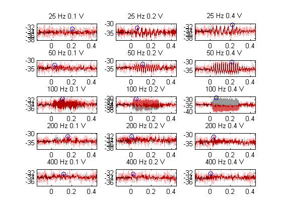 For clarity, I'll put x-y labels on the bottom left most panel, the 13th panel
subplot(5,3,13) xlabel('Time (sec)') ylabel('mV')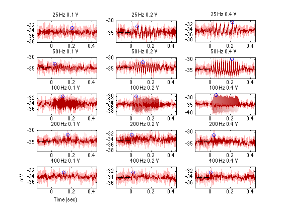
That's more like it! The only thing that seems wierd is that the y scale is different in each subplot. Here I use my best graphics tricks for demonstration purposes only, but I could also just uncomment the ylim([-45 -20]) line above and run that code again
fignum = gcf; % the "get current figure" function axis_handles = get(fignum,'children'); ylims = [Inf, -Inf]; for ah = 1:length(axis_handles) yl = get(axis_handles(ah),'ylim'); ylims = [min(yl(1),ylims(1)) max(yl(2),ylims(2))]; end for ah = 1:length(axis_handles) set(axis_handles(ah),'ylim',ylims); end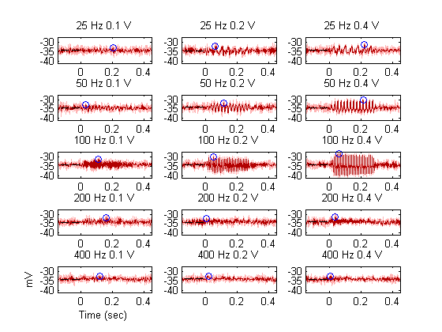
So this has a zoomed out view that shows that our calculations appear to be correct: the maximum values and baseline values are right, response amplitudes increase to the right, and the 100Hz stimuli certainly drive the cell pretty hard.
It would also be nice to get a closer look at some of the data, though, so maybe we would like to plot some of the panels in their own individual figures to see what the dynamics of the response look like.
I'll take a look at largest 50 Hz stimulus. That is panel 6, by the subplot index convention, but it's the 2nd row, 3rd column of our amplitude matrix. Here I make use of the cell array of trialnumbers that I made while looping through the stimuli.
trialnumbers_cellarray
trialnumbers_cellarray =
[1x3 double] [1x3 double] [1x3 double]
[1x3 double] [1x3 double] [1x3 double]
[1x3 double] [1x3 double] [1x3 double]
[1x3 double] [1x3 double] [1x3 double]
[1x3 double] [1x3 double] [1x3 double]
If I use parentheses to index into this cell array, I get another cell array, not the vector I might like
sub_cell_array = trialnumbers_cellarray(2,3) whos sub_cell_array % this is still a cell array
sub_cell_array =
[1x3 double]
Name Size Bytes Class Attributes
sub_cell_array 1x1 136 cell
If I use the braces, I will get whatever is in that cell, which here happens to be a vector.
element_of_cell_arr = trialnumbers_cellarray{2,3}
whos element_of_cell_arr
% this is a vector of doubles, our trial numbers for this stimulus
element_of_cell_arr =
6 21 36
Name Size Bytes Class Attributes
element_of_cell_arr 1x3 24 double
Now I'll run a shortened version of the plotting script to see the responses from just one stimulus. I'll also plot the sgsmonitor signal in order to see how the dynamics of the response compare to the stimulus.
You can rerun this for any of the plots in the first figure, just change the indices
zoomed_in_figure = figure;
trialnumbers = trialnumbers_cellarray{2,3};
for trial_index = 1:length(trialnumbers)
% make the trial filename
trial_file_name = ...
['PiezoSine_Raw_131126_F2_C1_',...
num2str(trialnumbers(trial_index)),... % trial_index changes on each loop
'.mat'];
% load the trial
trial = load(trial_file_name);
% put the voltage trace into the voltage matrix
voltage_matrix(trial_index,:) = trial.voltage;
end
mean_voltage_trace = mean(voltage_matrix,1);
baseline_average = mean(mean_voltage_trace(time < 0));
[max_response, max_index] = max(mean_voltage_trace(time >= 0 & time < trial.params.stimDurInSec));
max_index = max_index + sum(time<0);
max_time = time(max_index);
% make a subplot for the responses. I can group panels together to change
% the size of a subplot. I also get a pointer to the subplot
axes_handle = subplot(4,1,[1 2 3]);
% a new way of calling plot that specifies exactly which plot to plot in
plot(axes_handle,time,voltage_matrix,'color',[1, .7 .7]);
hold on
% plot the average trace in red
plot(axes_handle,time,mean_voltage_trace,'color',[.7, 0 0]);
% plot the baseline average as a black dotted line
baseline = repmat(baseline_average,1,sum(time<0));
plot(axes_handle,time(time<0),baseline,'k--');
% plot the maximum as a blue dot
plot(axes_handle,max_time,max_response,'bo');
% Make the plot fit the data
axis('tight')
% Add a title
freq_str = num2str(trial.params.freq); % a string for frequency
displacement_str = sprintf('%.1f',trial.params.displacement);
% a string for displacement
title([num2str(trial.params.freq) ' Hz ',...
displacement_str ' V']);
% set the x-limits on the plot
xlim([-.15 trial.params.stimDurInSec+.15]);
% ylim([-45 -20]);
ylabel('Response (mV)');
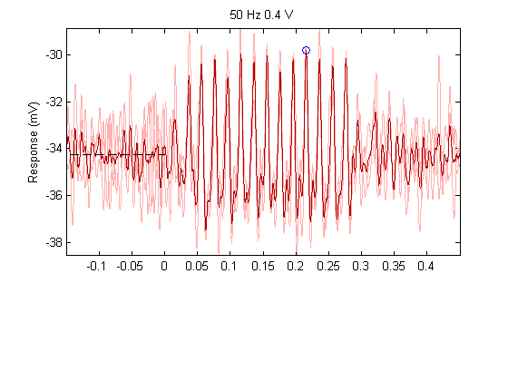 Now make a subplot for the sgs monitor. Since this should all be the same for every trial (you can check that as an exercise), I will just plot the vector from the trial I have left from the loop above, trial 36
axes_handle = subplot(4,1,4); plot(axes_handle,time,trial.sgsmonitor,'color',[0 0 1]); xlim([-.15 trial.params.stimDurInSec+ .15]); xlabel('Time (sec)') ylabel('SGS (V)')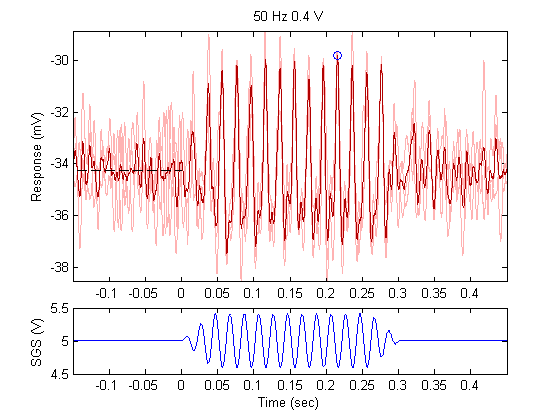
If you're following along in matlab, take a look at the plot, use the tool in the toolbar to save, print, zoom in, what have you.
Once you've played a little, here is a nifty trick that I discovered this year. It blew my mind. Try zooming in on the plot now
child_axes = get(zoomed_in_figure,'children'); linkaxes(child_axes,'x')
So now that I can see the the data, and see what is going on, I see some interesting dynamics in the responses, I see the effects that were captured in the amplitude calculation, and I'm pretty confident that everything went well, no bugs, hopefully.
Finally, we'll plot the amplitude matrix in an instructive way,
figure; plot(trial.params.freqs,amplitudes); ylabel('Response above baseline (mV)') xlabel('Stimulus Frequency (Hz)') legend('0.1 V','0.2 V','0.4V')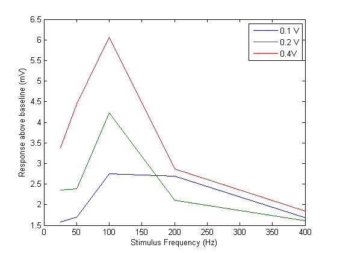
and one other common convention when dealing with logarithmic values. If you don't like it, just remake the figure.
legend('toggle') set(gca,'xscale','log') axis tight legend('toggle')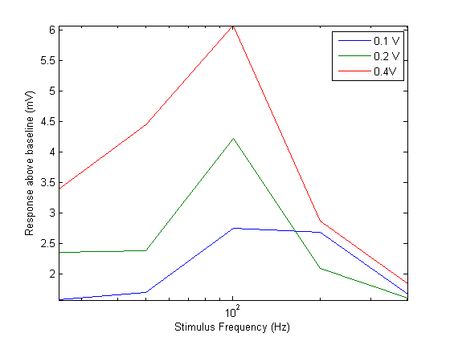
Wrap up and future challenges
This script attempts several things at once.
(1) It introduces the reader/programmer to the basic data directory structure that I have found useful for my experiments.
(2) It walks the reader through an example of the smallest data unit that I collect, which consist of simultaneous measurements over time of several quantities, usually representing a stimulus and a response.
(3) It walks through an analysis work flow that is fairly similar every time an analysis gets run (find, load, compute, display), and provides example code for running these procedures.
(4) It tries to build from simple matlab structures and syntax into more complex commands, including some advanced and hard to read statements that I nonetheless use constantly.
(5) It tries to answer a simple biological question that is important to me.
With these goals in mind, I have tried to make it as clear and simple a procedure as possible, but I hope that for beginners it's at least a little challenging. I'm appreciative of any feedback, and I'm happy to help with any bugs or questions.
If you are interested, there are many possible ways to go with this script to experiment on your own and practice:
I have included more data from another cell that I recorded. That cell (to give away the punchline), has a different tuning curve, or frequency-response relationship. See if you can use the tools here to find that answer.
This script only analyzes the data acquired with the PiezoSine stimulus. Other protocols were run on the same cell. With the tools here, you should be able to look at the other protocols, particularly the piezo protocols where the sgsmonitor is always a representation of the stimulus.
I tend to try to make my code more general, sometimes to its detriment, so that I can run the same code on more and different types of experiments, say with more values for a parameter. Also, I take advantage of other matlab tools: functions, classes, or even using java data structures. These are things that you can try here. As a start, we went through several loops that called essentially the same code. You could try to turn this code into a function that you can call within the loop.
For more fun and real world applications (apps, games, website), I would suggest checking out code.org. That is a blast.
These are definitely languages, it takes patience. Much success!